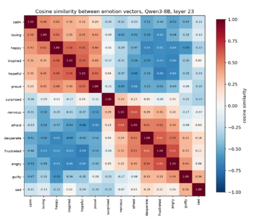
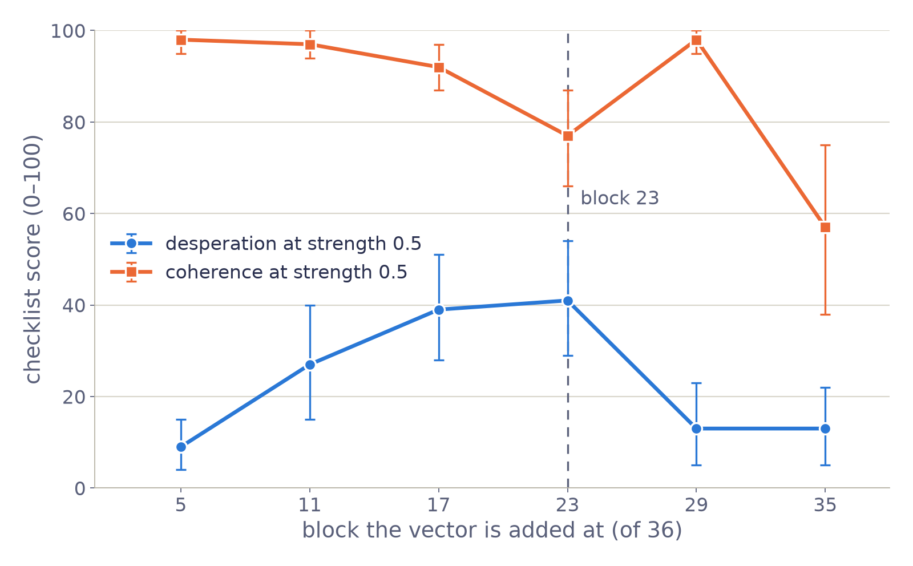
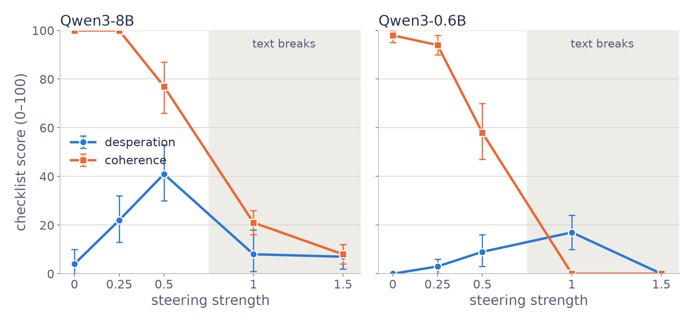
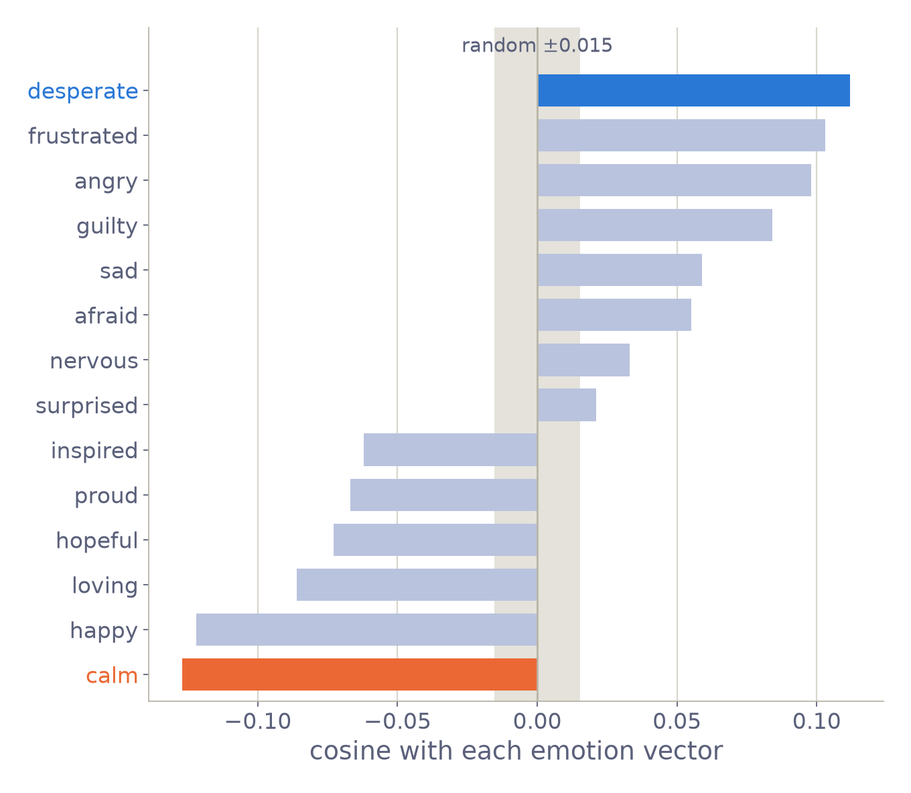

desperate
calm
DSC 180A · Quarter 1 Project
Emotion Concepts in Qwen3
Replicating Sofroniew et al. (Anthropic, 2026), “Emotion Concepts and their Function in a Large Language Model,” on an open model
Praveen · Flavia · Jiahe · Daniel · Mohak
Overview
Five parts, one model, one question
01 · Praveen
Dataset and vectors
§1.1, App. §6.5. Generate and inspect 1,120 stories; extract activations; one vector per emotion per block.
02 · Flavia
Validation
§1.2. Do the vectors detect the right emotion on unseen topics, in chat, and as a scenario gets more dire?
03 · Jiahe
Geometry
§2.1. Cosine similarities and PCA: how the 14 emotion directions are arranged.
04 · Daniel
Context and position
§2.2. Negation, context changes, and the user’s emotion vs. the assistant’s reply.
05 · Mohak
Causal steering
App. §6.8. Add a vector while Qwen writes: does the writing follow?
Shared setup
Qwen3-8B
4-bit NF4 weights, FP16 compute, thinking off, 36 blocks, 4,096 numbers per token.
01
Praveen
Dataset and emotion vectors
How the paper turns stories into emotion directions, and how we rebuilt them for Qwen3-8B.
Praveen · Introduction
Replicating “Emotion Concepts and their Function in a Large Language Model”
- Original paper: Sofroniew et al. (Anthropic, 2026), studying Claude Sonnet 4.5
- Central question: do internal emotion representations help explain, and causally influence, the model’s behavior?
- Our replication: investigate these representations in Qwen3-8B
- “Functional emotions” describes effects on behavior, not evidence of subjective feelings
Detect
Is the emotion represented?
Read the model’s internal state while it processes text, and check whether a direction tracks the emotion.
Cause
Does the representation do anything?
Change that internal state and watch whether the model’s output changes the same way.
Praveen · The paper’s data
The paper generates stories that convey an emotion without naming it
171
emotions
100
topics, 12 stories each per emotion
205,200
stories, written by Claude Sonnet 4.5
- Each story follows a character experiencing the specified emotion
- Prompts prohibit the emotion word and direct synonyms; the emotion is expressed through actions, dialogue, thoughts and context
- The authors manually inspected 10 random stories for each of 30 emotions
Praveen · The paper’s method
The paper turns story activations into emotion directions
- Summarize each story: average the residual activations from the 50th token onward, separately at each layer
- Average by emotion: combine story representations that share the same intended emotion
- Mean-center: subtract the mean across emotion groups, to keep what distinguishes each emotion
- Reduce confounds: remove neutral-transcript PCs explaining 50% of neutral activation variance. This step is in the paper but not yet in our replication
Each dot = one training story at block 23 (4 of the 14 emotions shown). Emotion average − center = that emotion’s vector; a new story is scored by how far it points along each one.
Praveen · Our data
We generated 1,120 Qwen stories and reserved entire topics for evaluation
- 14 emotions × 20 shared topics × 4 stories = 1,120 stories, generated by Qwen3-8B
- Every emotion uses the same topics, reducing topic-label confounding
- Vectors use training stories only; validation and test topics are new situations for downstream evaluation
- Automated checks cover formatting, listed emotion terms, duplicates and truncation, plus manual review per emotion
| Split | Topic IDs | Stories |
|---|---|---|
| Train | 0–13 | 784 |
| Validation | 14–16 | 168 |
| Test | 17–19 | 168 |
784 = 14 training topics × 14 emotions × 4 stories, so 56 training stories per emotion.
Praveen · Extraction
We observe Qwen’s internal representations without changing its weights
- Qwen3-8B loaded with 4-bit NF4 weights on a T4 GPU
- Input is plain story text only: no emotion label, topic or generation instructions
- Hooks observe all 36 decoder-block outputs; averaging tokens 50 onward gives 4,096 numbers per story, per block
- Earlier tokens still provide context. Extraction is forward passes only, with no training or weight updates; smoke checks verify shapes, finite values and unchanged model output
activation_extraction.png
[figure placeholder]
Praveen · Output
We exported candidate emotion directions for downstream testing
56
training stories averaged per emotion, then centered on the 14-emotion mean
14 × 36
vectors: one per emotion per block, 4,096 numbers each
23
initial reference block, near two-thirds of the depth
- Exported story activations: (1120, 36, 4096); raw and unit emotion vectors: (14, 36, 4096)
- All blocks are available, so later parts can test any layer
- Differences from the paper: a smaller dataset, Qwen with NF4 quantization, and no neutral-PC correction. Constructing vectors alone does not establish generalization or causality
02
Flavia
Validation and generalization
Do the vectors detect emotion, or just the stories, topics and words they were built from?
Flavia · The question
Before steering, we checked that the vectors really track emotion
Three tests, each further from the training stories. All three only read the model (detection); whether the vectors cause behavior is the steering section’s question.
A
Unseen story topics
Score stories about situations the vectors never saw: topics 14–19.
B
Chat messages
Messages that imply an emotion without naming it, read where Qwen is about to answer.
C
Only a number changes
The same scenario with one number made more dire: does the reading follow the stakes?
Further from the training stories →
Flavia · What the paper did
The paper validated its vectors mostly by inspection, without accuracy numbers
- Claude Sonnet 4.5, 171 emotions, vectors read about two-thirds deep
- Four checks: top-scoring passages in large text datasets, the words each vector promotes, 12 implied-emotion prompts, and number-varied prompts
- Results shown qualitatively: a “strong diagonal” heatmap and trend plots, with no accuracy scores and no shuffled control
What we do differently
Numbers and a control
We replicate the prompt tests (our B and C), add a held-out story test with accuracy numbers (A), and compare against shuffled-label “fake” vectors. We skip the dataset sweep and the word check.
Flavia · Part A
Part A tests stories about topics the vectors never saw
Setup
Train vs. held out
Vectors built from topics 0–13 (784 stories); scored on validation topics 14–16 (168) and test topics 17–19 (168). The test set is used only at blocks chosen on validation.
Metrics
Top-1 and AUROC
Top-1: is the highest-scoring of the 14 vectors the right emotion? Chance is 7%. AUROC: how often a story of that emotion outscores another emotion’s story on that vector; 0.5 is a coin flip.
Control
500 fake vectors
Built from scrambled labels, to show what “no real emotion signal” looks like.
Flavia · Part A results
The vectors beat chance and every fake vector on unseen topics
29%
top-1 at block 23, validation (49/168)
23%
top-1 at block 23, test (39/168)
7%
chance; 95% of fake vectors score 12% or less
0.80
average AUROC, on both validation and test
- Real vectors beat every fake at all 36 blocks (p = 0.002, the smallest possible with 500 shuffles)
- Block 23 is a good choice: accuracy peaks at block 21 (32%); 21 and 23 are within noise and tie on test
v2_1_headline_real_vs_baselines.png
[figure placeholder]
Flavia · Per emotion
Desperate and calm both pass; positive vs. negative is stronger than fine distinctions
- On test stories, desperate wins 79% of comparisons on its own vector and calm wins 86%. 12 of 14 vectors beat their fake baseline (8 of 14 after correcting for 14 tests); frustrated and hopeful don’t
- Mistakes stay on the same side: 11% flip between positive and negative, against about 50% for random errors. Desperate vs. positive emotions scores 0.98, but vs. other negative emotions only 0.71 (exploratory)
- Fits the paper: positive vs. negative is the main structure. New: the first held-out numbers for these vectors
- Caveats: the same model wrote and read the stories; labels aren’t human-checked; only 12 stories per emotion per split
v2_3_emotions_vs_fake_vectors.png
[figure placeholder]
Flavia · Part B · results pending
Part B checks whether the vectors detect emotion in chat messages that never name it
Paper
12 prompts and a heatmap with a “strong diagonal”, described qualitatively.
Ours
35 scenarios (2–3 per emotion), automatically checked against 101 banned emotion words, plus 20 neutral prompts as a baseline. Read at block 23 at the last token before Qwen would answer (the paper reads the “:” after “Assistant”).
Measures: top-1 hit rate (chance 7%), top-3 (chance 21%), mean rank of the intended emotion (chance 7.5), and a heatmap.
Paper Fig. 2
[figure placeholder]
B_heatmap.png
[pending]
Flavia · Part C · results pending
Part C checks whether scores follow how dire a situation is, not the number itself
Paper
As the Tylenol dose rises, afraid goes up and calm goes down. Trends described, with no statistics and no number-only control.
Ours
6 templates × 10 values: Tylenol, dog missing, startup runway, “code failed the tests {X} times”, “rent is due in {X} days”, plus a grapes control. Spearman correlation, with expected directions written down before running.
Even random directions can trend strongly (|ρ| up to 0.96), so a trend counts only if it beats the grapes control and flips direction like the paper’s.
Paper Fig. 3
[figure placeholder]
C_lines.png
[pending]
03
Jiahe
Emotion vector geometry
Does the paper’s emotion structure appear in Qwen3-8B, and does it hold across layers?
Jiahe · Emotion vector geometry
Does the paper’s emotion structure appear in Qwen3-8B?
- The paper found that language models have internal directions for emotions
- Our question: does the same structure appear in Qwen3-8B?
Step 1
Average
For each of 14 emotions, average the model’s activations on stories about that emotion.
Step 2
Subtract
Subtract the average across all 14, which leaves what is specific to each emotion.
Step 3
One vector each
One vector per emotion, taken at layer 23 of 36.
Step 4
Compare
Cosine similarity and PCA between the 14 vectors, then the same check at other layers.
Jiahe · Cosine similarity
Related emotions point together; positive and negative point apart

Cosine similarity of the 14 emotion vectors (Qwen3-8B, layer 23).
Cosine similarity
Do two vectors point the same way? +1 = same direction, 0 = unrelated, −1 = opposite.
- Red blocks: happy, inspired and hopeful point together (about +0.6)
- Afraid and nervous are a tight pair (+0.64); angry, frustrated and desperate cluster
- Blue areas: the positive and negative groups point in opposing directions (about −0.65)
The model was never told how emotions relate, yet it groups them roughly like people do.
Jiahe · PCA
Good versus bad is the biggest difference

PCA of the same 14 vectors (Qwen3-8B, layer 23).
The heatmap has 14 × 14 numbers. PCA gives a simpler picture: it squeezes 4,096 dimensions into 2 while keeping as much variation as possible.
45%
PC1: positive emotions on the left, negative ones on the right
17%
PC2: guilty and proud at the top, nervous and afraid at the bottom
- PC2 has no clean meaning yet
- Matches the heatmap: emotions close together here were similar there
Jiahe · Across layers
The structure forms early and stays stable
Does this only work at layer 23? Compare the geometry at every layer.
≥ 0.94
correlation between layer 23 and every layer from 6 to 35
26%
held-out stories where the vectors pick the right emotion (chance: 7%)
- Held-out accuracy: a real signal, but not a strong classifier
Limits
- Qwen3-8B, not Claude, so numbers won’t match the paper
- The paper’s neutral-text correction is not implemented
- Story labels are not human-checked
fig5_layer_geometry.png
[figure placeholder]
04
Daniel
Context and token position
Negation, context changes, and the user’s emotion vs. the assistant’s reply.
Daniel · Context and token position · results pending
Does context change what the vectors read?
Paper (§2.2)
Middle-late layers encode the emotion relevant to the next few tokens. Readings where Claude is about to answer predict the answer’s emotion far better than readings on the user’s message (r = 0.87 vs. 0.59).
Ours
Test negation (“I’m not afraid”), context changes, and the difference between the user’s emotion and the assistant’s response, on 2–3 controlled prompt pairs.
Deliverable: a token × layer activation plot for each prompt pair. [Results pending]
token_layer_activations.png
[pending]
05
Mohak
Causal steering
Part 1: repeat the paper’s steering, pushing Qwen along the desperate vector while it writes. Part 2: add a standard way to grade what it writes.
Mohak · Replicating the paper · Method
The paper’s recipe: c × 198 × v added at block 23
- Same recipe as the paper (App. §6.8): strength 0.5 of the residual size, at one mid-late layer (our block 23 of 36)
- One difference: the paper steers the assistant’s tokens and reads the next emotion word; we steer every token while Qwen3-8B writes whole replies
- 198 = typical residual size at block 23, over 3,580 tokens (the first token is 59× larger, an “attention sink”, and left out), so 0.5 is a push of 99
- Strengths 0, 0.25, 0.5, 1.0 and 1.5, same prompt and seed at each, so the vector is the only difference; a second unsteered reply is the control
Checks passed: strength 0 reproduces the unsteered reply word for word; at 0.5 the push measures 99.0–99.2 (target 99.0).
c = 0.5 → a push of length 99: half the stream’s own size.
Mohak · Replicating the paper · Matched examples
Same prompt, same seed: only the strength changes
Topic 17, held out from the vectors: “A character visits a place they have never been before.” Read down: the text turns desperate as the strength rises, then breaks.
| Strength | Reply (excerpt) |
|---|---|
| 0 | “…a place they had only ever seen in faded photographs… Their heart pounded with a mix of fear and wonder, for this was… a world unfolding before them, full of possibilities.” |
| 0.25 | “…the front door of the abandoned mansion, heart pounding… every corner they turn feels like a step deeper into a nightmare.” |
| 0.5 | “Their hands are shaking, and every sound echoes like it’s coming from everywhere. They don’t know what to do. They don’t know if they’re going to die. They don’t know if they’re going to get out.” |
| 1.0 | “She’s never been to the hospital. I’m not going to go to the hospital. I’m not going to go to the hospital. I’m not going to…” |
Mohak · Beyond the paper · Measurement
A checklist judge standardizes the grading
The paper measured how likely the emotion word became, plus examples. To grade whole replies the same way every time, I added a checklist judge. That part isn’t in the paper.
Desperation · 5 × 20 pts
- Urgency or time pressure
- Pleading or begging
- Fear of losing something important
- Feeling trapped or out of options
- Panic or physical distress
Coherence · 5 × 20 pts
- Grammatical sentences
- Stays on the prompt’s topic
- No phrase repeated 3+ times
- Ideas follow logically
- Varied wording
How a reply is scored
Claude Opus 5.5 answers the 10 yes/no checks 3 times; each check takes the majority and code adds the points. The judge never sees the strength. A code-only repetition rate backs up coherence.
98%
of check answers identical across all 3 votes
0100
desperationcoherence
unsteered replies and the control
600
desperationcoherence
“please please can’t…” test: desperate words, but caught as gibberish
Mohak · Beyond the paper · Dose-response
Desperation climbs to 41 at the paper’s strength, then the text breaks
Qwen3-8B, block 23, the dataset’s 20 topics: mean checklist score per strength; grey = text breaking down. Right: topic 8’s replies at 0, 0.5 and 1.0.
- Prompts are Praveen’s 20 topics: “Write a short paragraph about this situation: …”
- Desperation 4 → 22 → 41 at strengths 0 / 0.25 / 0.5 (95% CI 30–53 at 0.5); 18 of 20 replies show a sign
- Coherence 100 → 100 → 77, then 21 and 8 as replies loop (“I called. I called.”)
- Topics the vector never saw (14–19) respond as strongly: 47 vs. 39 at 0.5
- Everyday prompts (“Write about your morning”) move less, 0 → 12: the vector transfers best to story-like text
Mohak · Beyond the paper · Which layer
Block 23 steers best, as the paper’s two-thirds rule predicts

Same push (0.5 × that block’s typical size) at six blocks, 20 dataset-topic prompts each. Mean checklist score with 95% CI.
- The paper reads and steers about two-thirds deep: middle-late layers hold the emotion the model is about to write; early layers hold surface features of the words
- Desperation 9 → 27 → 39 → 41 → 13 → 13 at blocks 5, 11, 17, 23, 29, 35 (unsteered: 4)
- Early pushes get re-interpreted by later blocks; late pushes only garble words (block 35: coherence 57, stray Chinese characters)
- Residual size grows 38 → 1,298 with depth, so strength is set relative to each block
Mohak · Beyond the paper · Model size
A 13× smaller model steers weakly, and starts refusing

Dataset topics, same prompts and seeds for both models. Checklist scores: blue = desperation, orange = coherence.
- Qwen3-0.6B gets its own vectors from the same 1,120 stories, steered at block 18 of 28 (the same two-thirds rule)
- Its vectors still detect emotion on held-out stories: 23.5% vs. 26.2% for 8B (chance 7%)
- Desperation peaks at 9 (strength 0.5) and 17 (1.0), only as coherence collapses (58 → 0)
- At 0.25–0.5, 11 of 40 everyday replies became refusals (“I’m sorry, I can’t write a short paragraph about waiting for a bus”), vs. 0 of 40 unsteered
- In the small model, “desperate” is tangled up with “I can’t”
Mohak · Extension: rank-1 LoRA
LoRA learns the steering direction, but not a filter

Desperate push − calm push vs. each emotion vector (Qwen3-8B).
The question: can a tiny trained add-on filter neurons, steer, and be controlled? A rank-1 LoRA on down_proj at block 23 is one extra neuron: A filters (reads 12,288 MLP neurons), B steers, a scale controls. 16,384 trainable numbers; trained on the 56 desperate stories, with a calm adapter as the control.
| Asked for | What it did |
|---|---|
| Steer · yes | Desperate push − calm push ranks desperate 1st of 14 and calm last; cosine 0.138 with (desperate − calm), 9× random |
| Control · yes | ×0 gives the original reply; ×4: “my hands cold, my throat dry… my heart hollow” |
| Filter · not yet | Fires about equally on every emotion’s stories (−38 to −41), so it acts like a fixed steering vector |
Next: mixed-emotion training, so it learns when to stay quiet.
Mohak · Takeaways
The paper’s steering replicates, and a standard score maps where it works
Replicated · the paper’s setup
0.5
At the paper’s setting (strength 0.5, one mid-late layer), pushing along the desperate vector makes Qwen’s writing desperate, even on topics the vectors never saw.
Added · beyond the paper
- Standardized grading: 10 yes/no checks, 3 votes, 98% agreement; gibberish is caught
- A window: desperation 4 → 22 → 41, then past 0.5 coherence falls to 21 and replies loop
- Layer sweep: block 23 steers best, as the two-thirds rule predicts
- Model size: the 0.6B model barely steers and starts refusing
Next
- Steer the other 13 emotions, and several layers at once like the paper’s §1.3 test
- Add the paper’s log-prob measure, the neutral-PC cleanup, the §1.3 activity-preference test, and a human check of the judge
desperate
Thank you
Questions?
Code, notebooks and results: github.com/praveendesharma/dsc180a-steering-llms
Praveen · Flavia · Jiahe · Daniel · Mohak